Television Engineering
Digital Video Conversion -- MPEG-1
$author: Ching-Wen (Ed) Lai
$date: May. 2003
$revised: Mar. 2018
$Keywords: digital, video, conversion, mpeg1
An exercise of Digital Video Conversion for below cases
- Extracting MPEG-1 file from Standard VCD
- Cutting and Joining MPEG-1 file
- MPEG-4 Compression
- Compare Picture Quality and File Size in Step 3
Content
- Requirements
- Running
- Extracting MPEG-1 file from Standard VCD
- Cutting and Joining MPEG-1 file
- MPEG-4 Compression
- Compare Picture Quality and File Size
- Observation
- Advanced
- Reference
Requirements
Software
- VCDGear
- TMPGEnc
- FlaskMPEG
Media File
- Mulan (
.DATFormat)
Running
1. Extracting MPEG-1 file from Standard VCD
將 VCD 內所使用的.DAT 的檔案格式 轉換成影像處理軟體所能處理的影片檔 .MPG 格式，
- Download and Install VCDGear
- 由 VCDGear 官方網站下載，下面以 3.50a 板進行操作。
- 解壓縮後，直接點選
vcdgear.exe檔案後，進入VCDGear。 - Using VCDGear to convert AVSEQ01 data file to MPEG-1 format file
- 定義
Extraction / Conversion為dat - > mpeg - 按下
load指定欲處理的.dat檔。(C:\Documents and Settings\Sam\桌面\花木蘭\AVSEQ01.DAT) - 與 轉換後儲存的檔名。(
C:\Documents and Settings\Sam\桌面\花木蘭\AVSEQ01.mpg) 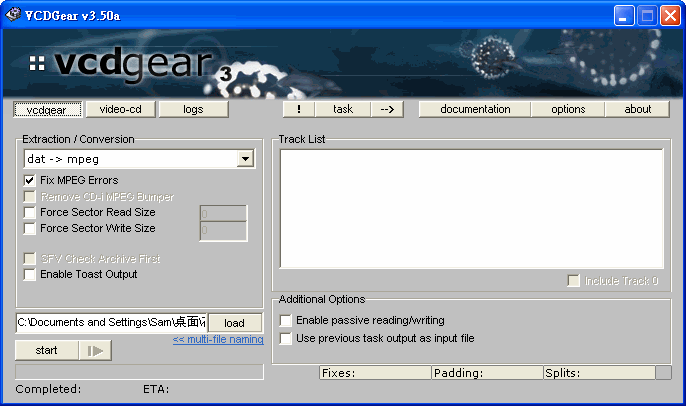 - 按下
start開始進行轉換。
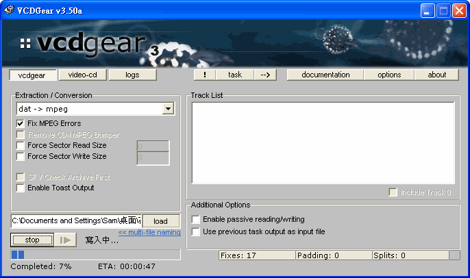 - 如果有
Fix MPEG Errors，轉換後會回報錯誤修正數目。在本檔案中有266個已修正 (Fixes : 226)
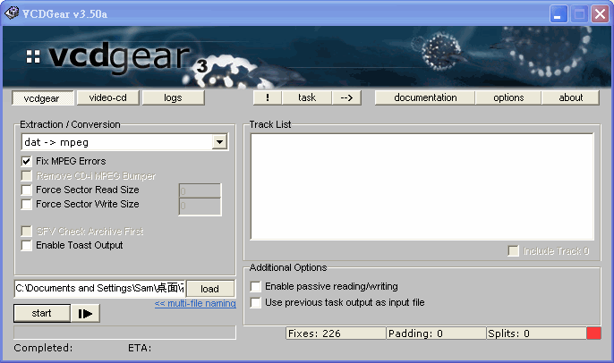
2. Cutting and Joining MPEG-1 file
- Download and Install
TMPGEnc - 由
TMPGEnc官方網站下載。 - 或直接下載中文化後版本 (以下由此中文化後版本軟體進行操作 )。
- 直接按下
TMPGEnc(2.50.32.120CT).exe檔案進行安裝 。 - Cut and Join 5-minutes vedio clip from MPEG-1 file
- 開啟
TMPGEnc，進入檔案 / MPEG 工具 / 合併及剪下, 適當的加入你所要剪輯的檔案。並將選定剪輯與合併的區段, 適當的加入清單中。選定輸出檔案名稱。

- 按下
執行即可開始執行。
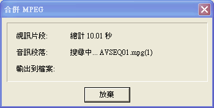
3. MPEG-4 Compression
- Download and Install FlaskMPEG
- 由
FlaskMPEG官方網站下載。 - Using different in
FlashMPEGto convertMPEG-1video clip toDivX - 點選
FlasKMPEG.exe啟動FlaskMPEG。
- 選擇
File / Open Media, 打開欲處理的檔案
(例如C:\Documents and Settings\Sam\桌面\花木蘭\3. mpeg 5 分鐘剪接\AVSEQ01_Cutting&Joining .mpg). 選定後會將該 mpeg 檔的屬性顯示於Control PanelWindow。

- 選擇
Options/ Advanced Options，檢視設定- Video : 將
Deinterlace output (slow)打勾，取得較高的輸出品質。
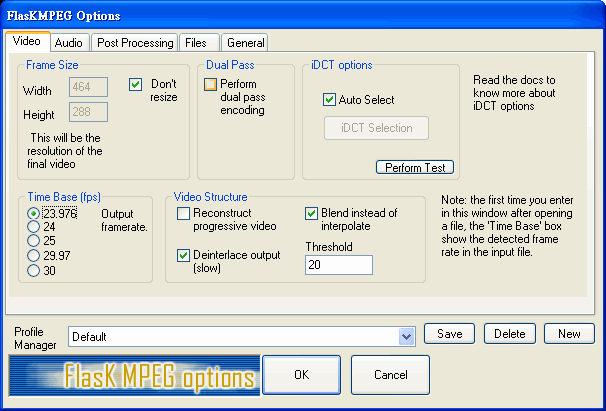 - Post Processing : 選
HQ Bicubic Fultering。
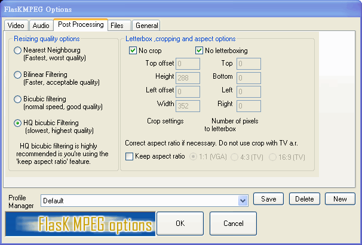 - Files : 輸出檔案按系統內定放於
C:\flaskOut。 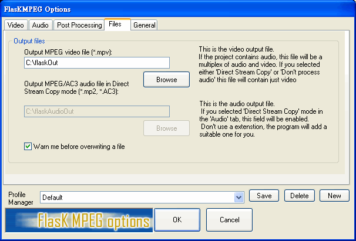
- Video : 將
- 選擇
Options/ Select Output Format，將AVI Output打勾。使輸出為AVI格式。 - 選擇
Options/ Output Format Options，打開Flask MPEG AVI Output OptionsWindow。 - 此片 ( 花木蘭 )不算是愛情文藝片，偶有些較快的場景，故將
- Video Codecs.Double Click to configure : 設為
Dix ;-) MPEG-4 Fast-Motion.
- 按下
Configure進行以下設定，將 Keyframe 調成每秒12；Smoothness 最佳化100 %；Data Rate 為600

- Audio Codecs 設成
MPEG Layer-3 Codec (professional), Available formats for audio codec 設為MPEG Layer-3 - 112 kBit/s, 44,100 Hz, Stereo, 調整完設定後按下OK。
- Video Codecs.Double Click to configure : 設為
- 在
Control PanelWindow 按下Flask it!進行 轉成MPEG 4壓縮。
▼壓縮中畫面
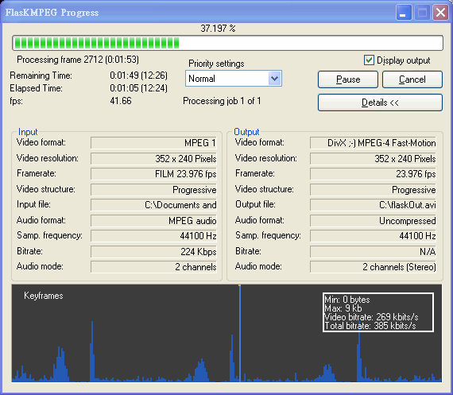 - 最後的壓縮結果會存於內定的
C:\flaskOut.avi檔案內。
4. Compare Picture Quality and File Size
-
右圖為原本壓縮前( MPEG-1 規格 ) 的畫面，檔案大小為 51,821 KB.

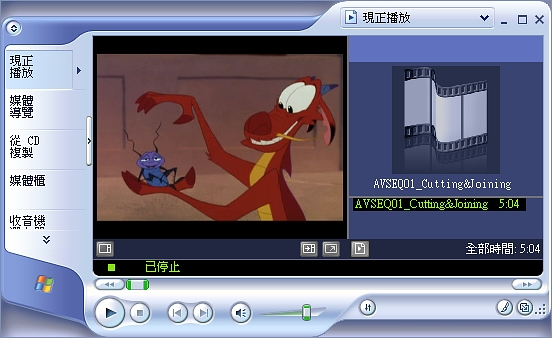 -
經過 FlaskMPEG 中 MPEG-4
- Video Codecs.Double Click to configure : 設為
Dix ;-) MPEG-4 Fast-Motion - Audio Codecs: 設成
MPEG Layer-3 Codec (professional) -
Available formats for audio codec: 設為
MPEG Layer-3 - 112 kBit/s, 44,100 Hz, Stereo。
壓縮后的大小為19,730KB，比原先檔案足足少了2.62倍。
但亦可由右圖看出來，畫面品質精細度亦變的較差。
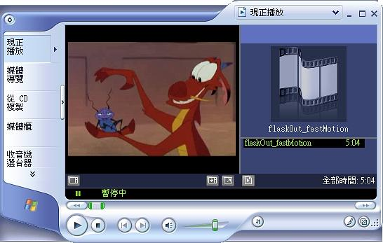 -
在
FlaskMPEG將Video Codecs改成Low-Motion其他設定維持不變，發現檔案大小變大成25,535 KB，雖然畫面細緻度增加了，但檔案大小亦增大1.29倍 。
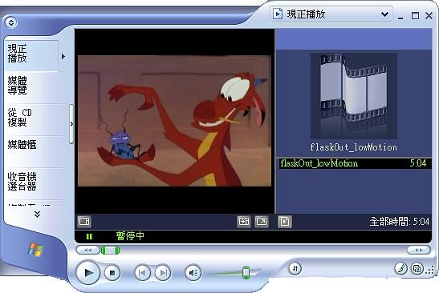 -
在
FlaskMPEG將 中 - Video Codecs: 設囘原來的
Dix ;-) MPEG-4 Fast-Motion - Available formats for audio codec 改成
MPEG Layer-3 - 24 kBit/s, 44,100 Hz, Stereo, 可以發現檔案大小減小 0.21倍 ，但音質亦可以接受。 - 再將 Available formats for audio codec 改成
MPEG Layer-3 - 18 kBit/s, 44,100 Hz, Stereo,檔案大小雖減少了，但卻不多，音質也還可以接受。 - 但從
24 k調成18 k因其檔案大小減少不多，有時卻也不是很必要。

Observation
- 檔案大小相關比較
| ID | Description | Filename | Runtime | File Size | |-----|-------------------------------------------------------|-------------------------------------------|------------| |1 | 原始 AVI 格式 | AVSEQ01.DAT | 21:45 secs | 224,846KB | |2 | 轉成 MPEG -1 格式 | AVSEQ01.mpg | 21:45 secs | 221,611KB | |3 | 剪接成 5 分鐘左右 MPEG-1 格式影片 | AVSEQ01_Cutting&Joining .mpg | 5:04 secs | 54,821KB | |4 | 將 5 分鐘左右影片轉成 MPEG-4 ( Fast-Motion )格式 | flaskOut_fastMotion.avi | 5:04 secs | 19,730KB | |5 | 將 5 分鐘左右影片轉成 MPEG-4 ( Low-Motion )格式 | flaskOut_lowMotion.avi | 5:04 secs | 25,535KB | |6 | 將 5 分鐘左右影片轉成 MPEG-4 ( Fast-Motion/ 24k )格式 | flaskOut_24k.avi | 5:04 secs | 16,256KB | |7 | 將 5 分鐘左右影片轉成 MPEG-4 ( Fast-Motion/ 18k )格式 | flaskOut_18k.avi | 5:04 secs | 16,043KB |
Advanced
- There is another free Movie
Big Buck Bunny, we can use it to do this test also.